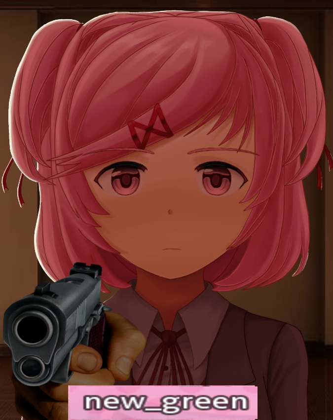

New_Green'in ufak alanına hoşgeldiniz.
New_Green ile ufak bir gezintiye çıkın. Neler yaptığını öğrenin.
Hadi Gidelim!Hakkında
Kendisi 10. sınıf öğrencisi. Aslında 11. sınıfa geçti. Bilgisayar teknolojileriyle uğraşmayı çok sever. Müzik dinlemeyi, kendi alanıyla ilgili içerik tüketmeyi çok sever. Şu anda meşgul olduğu birkaç proje var. Onlardan bir tanesi sevdiği bir oyuna mod yapmak.
İletişim
Eğer telefon numarası sizde var ise size seve seve yardımcı olur. Eğer telefon numarası yok ise Discord'dan "new_green" kullanıcı adı ile ulaşabilirsiniz. Ulaşamazsanız DokiTale sunucusuna girip oradan ulaşmayı deneyiniz.